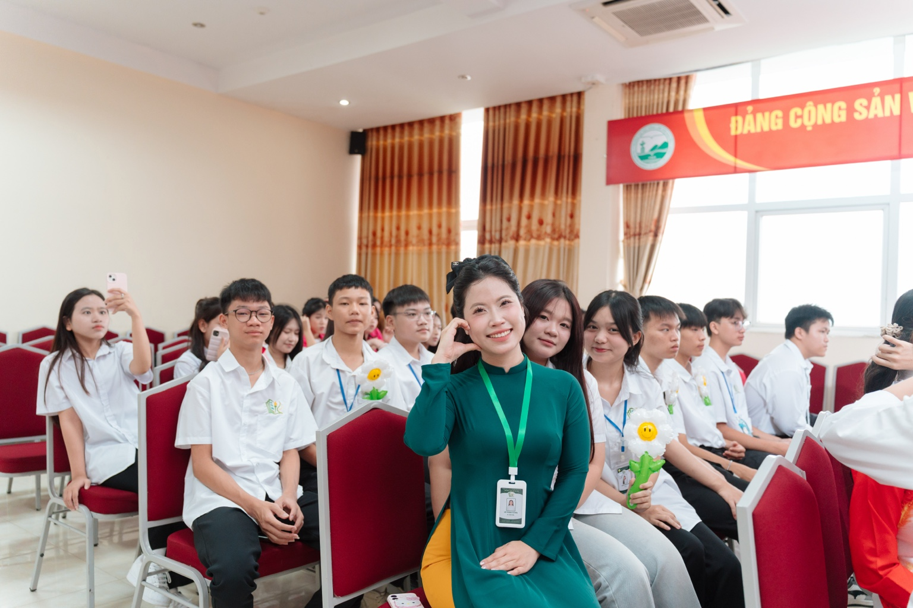

Đỗ Thanh Huyền
Giáo viên Ngữ văn · Luyện thi Đánh giá năng lực
- NCS. ThS Ngôn ngữ Việt Nam
- Chứng chỉ HSK 4 và HSKK Trung cấp
- Nhiều năm kinh nghiệm ôn thi ĐGNL
“Hiểu tác phẩm, rèn tư duy, nuôi dưỡng tình yêu với ngôn từ.”
Văn học không chỉ là môn học, mà còn là cách ta hiểu cuộc sống, nuôi dưỡng tâm hồn và tự tin cất lên tiếng nói của chính mình.
Nền tảng chuyên môn vững chắc và sự tận tâm trên hành trình học Văn.

Giáo viên Ngữ văn · Luyện thi Đánh giá năng lực
Bộ lọc dưới đây đang hiển thị các nội dung mẫu để thử giao diện website.
Câu hỏi luyện tập mẫu, chấm đáp án ngay trên trang.
Vị trí dành cho đề thi và bộ câu hỏi V-SAT.
Vị trí dành cho tài liệu và đề luyện ĐGNL.
Trong câu “Em đang đọc sách”, từ “đang” thuộc từ loại nào?
Các nhóm nội dung mẫu. Có thể thêm bài giảng thực tế, video và bài kiểm tra sau này.
Phân biệt các quan hệ nghĩa và cách vận dụng trong câu hỏi định tính.
Nhận diện và phân tích vai trò của người kể chuyện, điểm nhìn.
Cách tìm luận điểm, dẫn chứng và tổ chức lập luận thuyết phục.
Danh mục để đăng tài liệu PDF, phiếu học tập và sơ đồ tư duy do cô biên soạn.
Hệ thống từ loại, nghĩa của từ và phong cách ngôn ngữ.
Bộ ghi chú về thơ, truyện và văn bản nghị luận.
Khung triển khai ý và các lỗi lập luận thường gặp.
Liên hệ để tìm hiểu thêm về các lớp học và nội dung luyện thi.